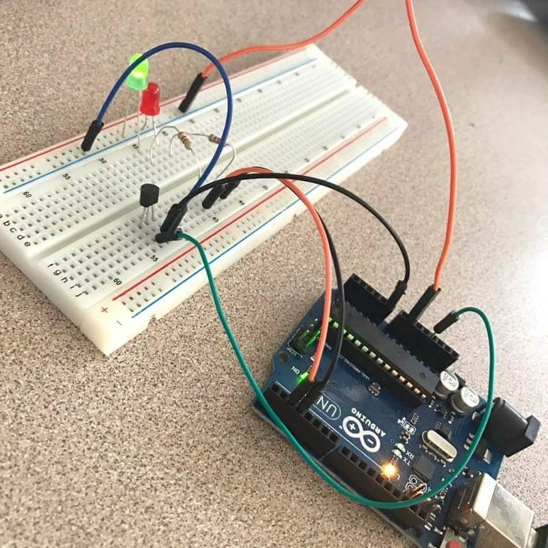

Portfolio
Home
Portfolio
Me Things...
Ardunio TEMPERATURE SENSOR

check out this project and do it yourself...just copy and paste the code..
/* Version 2.0 6/2012 MDG
*/
// We'll use analog input 0 to measure the temperature sensor's
// signal pin.
const int temperaturePin = 0;
void setup()
{
// In this sketch, we'll use the Arduino's serial port
// to send text back to the main computer. For both sides to
// communicate properly, they need to be set to the same speed.
// We use the Serial.begin() function to initialize the port
// and set the communications speed.
// The speed is measured in bits per second, also known as
// "baud rate". 9600 is a very commonly used baud rate,
// and will transfer about 10 characters per second.
Serial.begin(9600);
}
void loop()
{
// Up to now we've only used integer ("int") values in our
// sketches. Integers are always whole numbers (0, 1, 23, etc.).
// In this sketch, we'll use floating-point values ("float").
// Floats can be fractional numbers such as 1.42, 2523.43121, etc.
// We'll declare three floating-point variables
// (We can declare multiple variables of the same type on one line:)
float voltage, degreesC, degreesF;
// First we'll measure the voltage at the analog pin. Normally
// we'd use analogRead(), which returns a number from 0 to 1023.
// Here we've written a function (further down) called
// getVoltage() that returns the true voltage (0 to 5 Volts)
// present on an analog input pin.
voltage = getVoltage(temperaturePin);
// Now we'll convert the voltage to degrees Celsius.
// This formula comes from the temperature sensor datasheet:
degreesC = (voltage - 0.5) * 100.0;
// While we're at it, let's convert degrees Celsius to Fahrenheit.
// This is the classic C to F conversion formula:
degreesF = degreesC * (9.0/5.0) + 32.0;
// Now we'll use the serial port to print these values
// to the serial monitor!
// To open the serial monitor window, upload your code,
// then click the "magnifying glass" button at the right edge
// of the Arduino IDE toolbar. The serial monitor window
// will open.
// (NOTE: remember we said that the communication speed
// must be the same on both sides. Ensure that the baud rate
// control at the bottom of the window is set to 9600. If it
// isn't, change it to 9600.)
// Also note that every time you upload a new sketch to the
// Arduino, the serial monitor window will close. It does this
// because the serial port is also used to upload code!
// When the upload is complete, you can re-open the serial
// monitor window.
// To send data from the Arduino to the serial monitor window,
// we use the Serial.print() function. You can print variables
// or text (within quotes).
Serial.print("voltage: ");
Serial.print(voltage);
Serial.print(" deg C: ");
Serial.print(degreesC);
Serial.print(" deg F: ");
Serial.println(degreesF);
// These statements will print lines of data like this:
// "voltage: 0.73 deg C: 22.75 deg F: 72.96"
// Note that all of the above statements are "print", except
// for the last one, which is "println". "Print" will output
// text to the SAME LINE, similar to building a sentence
// out of words. "Println" will insert a "carriage return"
// character at the end of whatever it prints, moving down
// to the NEXT line.
delay(1000); // repeat once per second (change as you wish!)
}
float getVoltage(int pin)
{
// This function has one input parameter, the analog pin number
// to read. You might notice that this function does not have
// "void" in front of it; this is because it returns a floating-
// point value, which is the true voltage on that pin (0 to 5V).
// You can write your own functions that take in parameters
// and return values. Here's how:
// To take in parameters, put their type and name in the
// parenthesis after the function name (see above). You can
// have multiple parameters, separated with commas.
// To return a value, put the type BEFORE the function name
// (see "float", above), and use a return() statement in your code
// to actually return the value (see below).
// If you don't need to get any parameters, you can just put
// "()" after the function name.
// If you don't need to return a value, just write "void" before
// the function name.
// Here's the return statement for this function. We're doing
// all the math we need to do within this statement:
return (analogRead(pin) * 0.004882814);
// This equation converts the 0 to 1023 value that analogRead()
// returns, into a 0.0 to 5.0 value that is the true voltage
// being read at that pin.
}
// Other things to try with this code:
// Turn on an LED if the temperature is above or below a value.
// Read that threshold value from a potentiometer - now you've
// created a thermostat!
vvv if you want to check out more just click here vvv